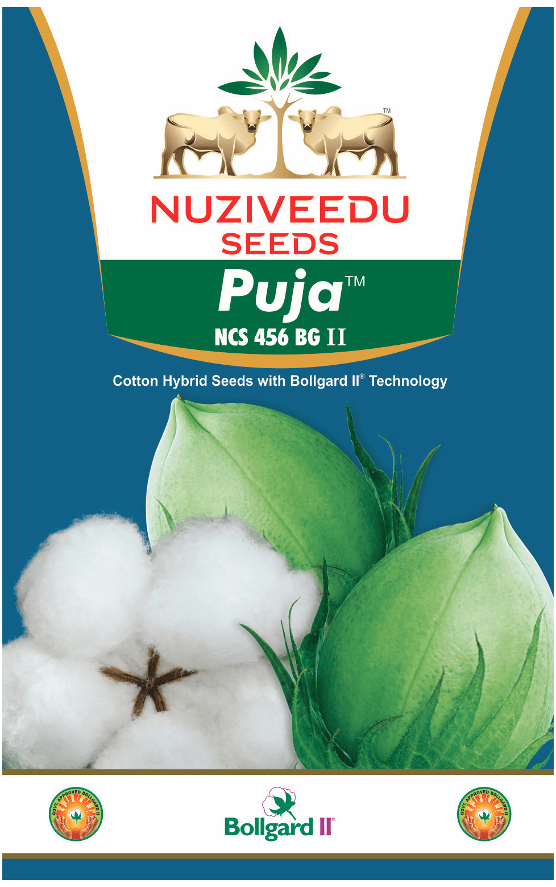

| Morphological Characters | |
|---|---|
| Hybrid Character: | Puja BG II(NCS-456 BG II) |
| Plant Height: | Very tall |
| Reaction to Major Pests: | Tolerant to Jassids, Whiteflies and Bacterial blight (black arm) |
| Boll Shape & Size: | Big and round |
| Quality of Produce: | Ginning%: 35 - 36 Staple length: 29.0-31.0 mm Strength: 25 - 28 g/tex Micronaire: 4.0 - 4.9 |
| Reaction to Stress: | Suitable for varied agro - climatic conditions & drought tolerance |
Special Features/USPs:
|
|